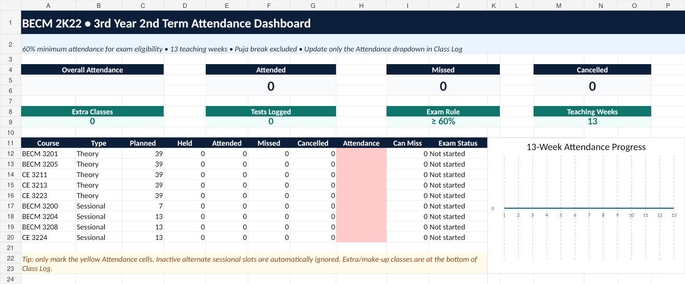

✓
Daily attendance tick
Mark Attended, Missed or Cancelled after each class. Inactive alternate lab slots stay out of the statistics.
BUILT ONLY FOR BECM 2K22
Attendance, cancelled classes, extra classes, spot tests and teacher-wise CT progress — designed around the actual 3rd Year 2nd Term routine.
Excel downloads instantly. Google tracking asks the student to choose their own Google account and creates a private copy in that Drive.

SIMPLE BY DESIGN
No generic student planner clutter. The tracker is prebuilt for the BECM 2K22, 3rd Year 2nd Term schedule.
Mark Attended, Missed or Cancelled after each class. Inactive alternate lab slots stay out of the statistics.
See course-wise attendance, exam eligibility, how many classes you can still miss, and your 13-week trend.
Log extra classes separately without disturbing the regular routine. They automatically join the final percentage.
Track spot tests and final CT marks for each teacher's course part — 30 marks per teacher for theory courses.
The dashboard uses the 60% minimum attendance rule and shows a clear eligible / below-threshold status.
Durga Puja is already included. Add a new university closure date once and matching routine classes are ignored.
2-MINUTE SETUP
Press Track. Sign in with Google if asked, then choose Make a copy. The file is added to your own Google Drive.
On Dashboard, select your BECM 3204, BECM 3208 and CE 3224 slot, then choose the BECM 3200 odd/even-week cycle.
Open Class Log and use the Attendance dropdown. Grey rows are inactive alternatives and are automatically ignored.
If a teacher takes a spot test, CT or quiz, choose the test type, teacher, score and total marks on the same class row.
Cancelled regular class: choose Cancelled. Extra class: use the dedicated Extra / Make-up section at the bottom of Class Log.
Your course percentages, 60% eligibility status, CT progress and weekly attendance progression update automatically.
Open Routine & Holidays, add the closure date and reason in the yellow override area. Scheduled routine rows on that date become inactive.
Record each one on the class where it happened. The Dashboard counts the tests and totals the raw marks teacher-wise. Enter the teacher's final CT mark out of 30 when finalized.
Yes. Download the Excel version and use it offline. The Google version is mainly for convenient access across phone and laptop.
ACADEMIC LOGIC BUILT IN
The sheet is not a generic template; its calculations follow the structure supplied for BECM 2K22.
READY?
Make your personal copy and update it after class. That is all the tracker needs.